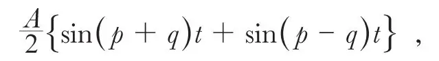

英文
英文弗莱明
编者按
在本文中安布罗斯·弗莱明对应用于无线电话和电视的波通信有不同的理解。在这两项技术中，装置把信号编译成振幅调制的载波。在傅立叶分析中，我们可以认为得到的波占据了载波频率附近的一个频“带”。大家通常要考虑的是这些频带如何分配，哪些频带能够被允许等等。但弗莱明认为人们对频带的过分关注掩盖了振幅的作用。太大的振幅可能会导致不同传输过程之间的干扰，就像在戏院中大声讲话带来的麻烦一样。弗莱明指出，对振幅而不是频带的关注将会帮助我们避免在应用这项新技术时遇到不必要的麻烦或限制。 英文
在科学史上，我们遇到的许多科学理论或解释被广泛接受并应用的情况，并不是因为它们能够被证明是真理，而是因为它们为某些科学现象提供了简单、易于被理解并且似乎合理的解释。大多数人并不能透过复杂现象发现真理，因此也就乐于不加质疑地接受某种能够便捷地解释复杂现象的假说。 英文
然而，简单的理解并不是自然界的基本特征，也不能随即得到，即不会因为我们想象一种能够解释某些自然现象的机制，它就以那种方式来实现。在关于无线电话传输以及电视的某种理论中，存在一种广为流传的认识，即为了达到可靠的良好效果，必须限制在具有确定宽度的“波带”内操作。这种观点虽然已被广泛接受，但我们有理由认为，这只是一类数学虚构，并不能与自然界的任何现实相对应。 英文
让我们考虑这是如何产生的。我们从所有的无线电话发射台发出一个具有确定的恒定频率（以千周表示）的电磁辐射。伦敦2LO电台按照这种方式以842千周的频率进行广播。这意味着它每秒内发出842,000次电子振荡或842,000个波。每个广播站已分配到一个确定的振荡频率，而且不允许偏离此频率。 英文
这就像一座发出单色光的灯塔或一个发出单一音符的风琴。对于大多数广播站而言，这类特有的专用频率位于每秒50万~100万之间，然而对于类似达文特里这样的长波站，它的频率低至193,000，或193千周。 英文
当我们在播音室里对着麦克风说话、唱歌或放出音乐，都会导致发射振荡的产生，这被称作载波，它会使波的高度或波幅出现起伏，但并不改变每秒钟发出的波数。这类似于只改变海面上波浪的高度或大小，而不改变被称作波长的从波峰到波峰的距离。 英文
假定广播站发射一个频率为n的载波，并令p = 2πn。我们通过函数a = A sin pt表示在任意时刻t这个波的振幅a，其中A是最大振幅。如按这种方式，我们施加一个由频率为m的音符引起的低频振荡，并令2πm = q，则我们可以通过下面的函数方程表示调制振荡
a = A cos qt sin pt
通过人们熟知的三角定理，上式等于

因此可以认为其等效于同时发射频率为n + m和n – m的两个载波。 英文
如果施加的音律或声音振荡在形式上很复杂，那么利用傅立叶定理，我们可将其分解为如cos qt形式的许多简谐项之和，可以等效地认为其中每一项都是一对共存的载波。因此单频载波的复杂调制可以用整个谱的发射或大量频率在n + N到n – N之间的同步载波来模拟，其中n是基本载波频率，而N是出现的最大声波频率，2N是波带的宽度。然而，这是纯数学分析，这个多频波带并不存在，而只存在单频的载波，可以对其振幅进行规则或不规则的调制。 英文
如果向广播站里的麦克风发出的声音非常复杂，例如乐器发出的声音或讲话的声音，那么根据这个数学原理，我们可以假定广播站里同时发出大量频率被限定在“波带宽度”之内的载波来摸拟单个振幅不规则波动的载波。 英文
然而，这仅是一个数学技巧，类似于我们在假想中将单个力或速度分解为两个或更多个分量。因此，如果我们考虑一个沿倾斜平面滚下的球，并要求知道球在一秒钟内滚动多远，我们就可以将球受到的单一的垂直引力分解为两个分量，分别与平面平行和垂直。但这只是便于解决问题的一个理想的分解；实际的力仍只是作用方向垂直向下的单个力。对于无线电话也存在着相似的思考过程。事实上，发生的情况是，一个单一恒定频率的载波按照某种规则或不规则的规律在振幅上发生变化。根本不存在多重的波长或波带。 英文
接收器吸收了这类振幅振荡变化的辐射，并使通过扬声器的直流按照载波振幅的振荡变化而变化；载波的振动通过检测器的电子管进行整流。 英文
对于电视的无线传输来说也存在相同的情况。扫描点在物体上扫描，而反射光落在光电元件上，并在其中产生了与反射光强度精确成正比变化的直流。这个光电流用于载波振幅的调制，在接收端的氖灯会将这些载波振幅的变化转换回氖管的阴极光的变化。 英文
在无线电话和电视中均不存在各种不同波带的问题。只是存在振幅被调制的单频载波。那么争论的全部问题就是，可以允许振幅在什么范围内变化呢？ 英文
对于电视而言，批评现有成果的评论者们通常会提出，在允许的9千周的限制范围内，性能良好的或令人满意的电视不可能实现。但实际上根本不存在所谓的波带。这仅仅是一个在不产生干扰的情况下可以允许给定的载波中振幅如何变化的问题。 英文
这就类似于如下的问题：在音乐厅或剧场中你可以用多大的声音悄悄对邻座说话而不至于影响其他人呢？人们以这种方式耳语，并保持声音不是很大，这样可以不被注意。但是如果任何人非常不礼貌地用很大的声音说话，他很快就会被要求保持安静或被逐出会场。 英文
然而，确定波幅的调制范围并不是件容易的事情。它们以每米微伏的数量级来进行计量，并且是很难被测定的。但波长很容易用千周或米来定义，因此现已采用的方法是将发射限定到虚构的波带范围内，然而，这个波带实际上并不存在。 英文
这样的定义是不完善的，或者说是难以理解的。这有点像形而上学的老式定义，如“一个在暗室里摸索一只并不存在的黑猫的盲人”。类似地，我们假设的波带并不存在。存在的只是载波中振幅逐步或突然的变化。显然，总有一天我们将不得不修改我们的无线通信的编码规则。 英文
我们没有理由将我们的广播电台的输出限制在某种确定宽度的假想波带内，比如说9千周或其他任何限制范围，但我们有理由限定输出载波振幅的范围。 英文
我们必将找到某些易于应用的方法，用来定义及测量被麦克风或其他有变化的设备影响的载波的最大允许振幅。也许有人会认为，这只是事物的一种解释方式，没有必要像我们这样小题大做，但其他技术中的经验表明，不必要的官方限定是如何使可能的重大发明被推迟的。考虑一下这样的事例，机械牵引在英国的发展多年受阻，正是由于制定了荒谬的法规限制公路上的这类车辆的速度而导致的。唯一应该加以限制的，是那些出于公共安全性或便利性的考虑绝对必要的方面，而其他所有方面的限制往往会扼杀并妨碍发明和进步。 英文
（沈乃澂 翻译；李军刚 审稿）